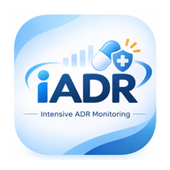

iADR
Intensive ADR Monitoring
งานเฝ้าระวังอาการไม่พึงประสงค์จากการใช้ยา
โรงพยาบาลพยัคฆภูมิพิสัย
เปิด iADR
ยังไม่ได้ตั้งลิงก์แอป: แก้บรรทัด APP_URL ในไฟล์ index.html
เพิ่มไอคอนลงหน้าจอโฮม
iPhone (Safari): ปุ่มแชร์ → เพิ่มไปยังหน้าจอโฮม
Android (Chrome): เมนู ⋮ → เพิ่มลงในหน้าจอหลัก / ติดตั้งแอป
หน้านี้เป็นเพียงตัวเปิดแอป ไม่มีข้อมูลผู้ป่วย